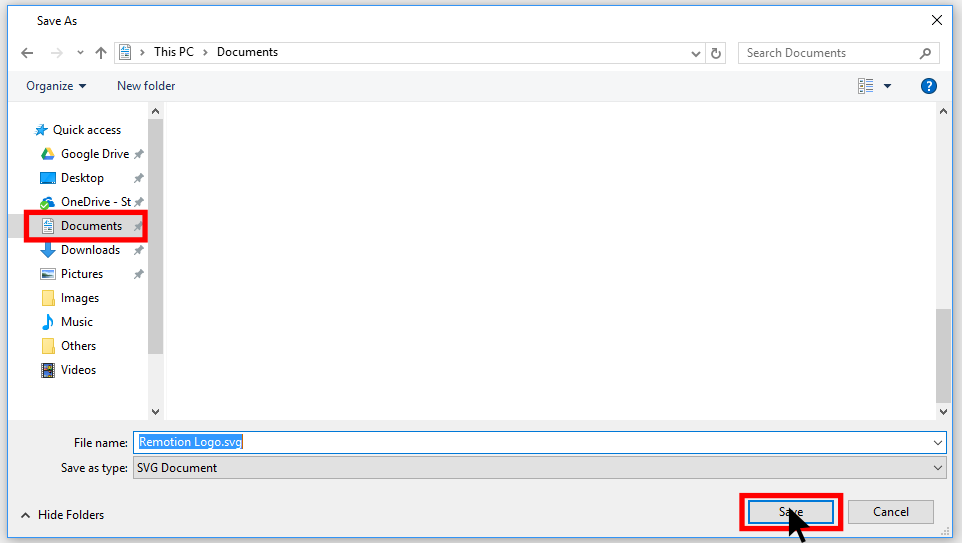

In this tutorial I will show you how to put a logo from a Scratch project into your profile.
Lets get started! First, go to the project where your logo is. I'm going to use my entry for Remotion's logo contest for this tutorial.
Once you're there, see inside and click on the sprite with your logo and click on the costumes tab:
Then, right-click on the costume with your logo and click "save to local file":

Enter a file name or just stick with the one is there and click save and your done! I would probably save your logo to the documents folder on either Windows or macOS, though you can save it anywhere you want. If you are using either Windows or macOS, the interface is very similar, so you shouldn't have too much trouble.
I hope at least a few of you found this tutorial helpful, if not, or if you want me to add another tutorial, please feel free to comment on my Scratch profle or my email.